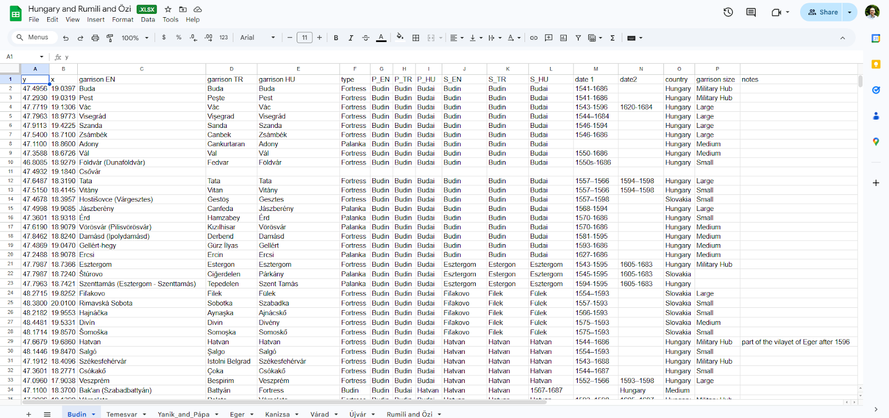
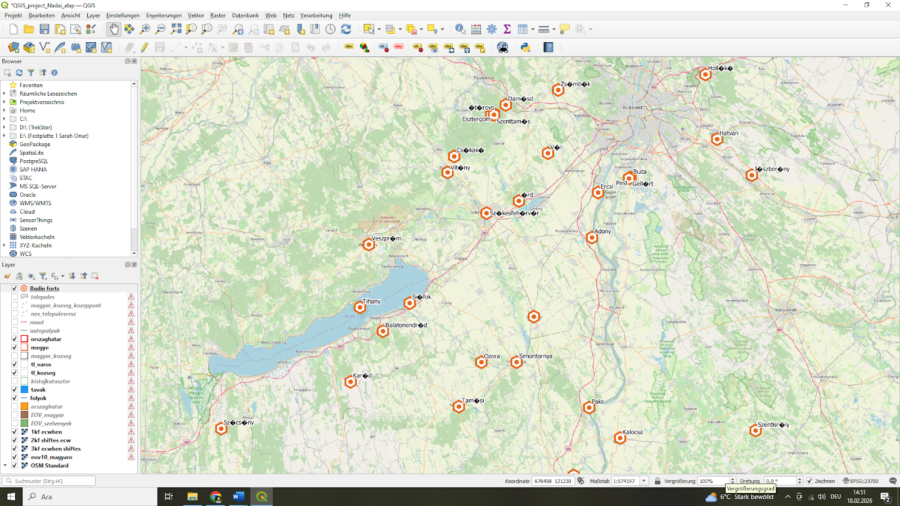

DANFront adopts the conceptual approach of environmental history to analyze Ottoman military progress along the Lower and Middle Danube. The ultimate benefit of applying the analytical tools and framework of environmental history to the study of the Ottoman Danube is that through such research, we gain a broader understanding of the river and of its role in shaping the Ottoman military's complex relationship to its natural environment. In this respect, the project combines the environmental and military histories of the Ottoman Danube with the region's political, social, and economic histories, offering a new interpretation of this frontier zone.
DANFront uses digital humanities mapping tools because they enable us to tell more complex stories through maps by adding layers, filters, pop-ups, and annotations. The digital humanities also enable qualitative and quantitative analysis of GIS data to gain complex understandings of spaces. Finally, the digital humanities help us recognize the social constructions of place, rethink the power structures that have historically been part of cartography, and reimagine how we tell stories.
In the project, we first extract data on fortresses, garrisons, and other fluvial infrastructure (shipyards, bridges, mills, etc.), as well as data on floods, icing, alluvial deposits, and other riverine features from a range of primary and secondary sources (Sources). Second, we transcribe extracted historical data into datasets (in the form of spreadsheets and charts) (Database).

An excerpt from the dataset, listing the Ottoman garrisons in the Budin province
Third, we integrate them into an interactive map (Maps) using the open-source software Quantum Geographic Information System (QGIS). The map uses the Hungarian Geodetic Reference System (EPSG:23700) as its coordinate reference system. As base layers, OpenStreetMap data were projected, and digitized map sheets from the First Military Survey of Hungary (1782–1785) were incorporated as a historical overlay. Researchers can navigate, analyze, download, and use our data, as it is open access.

An excerpt showing the mapping of garrisons, using QGIS
In the project, we also visualize the datasets graphically (Visualizations). By providing visual representations of historical data, we aim to enable a range of cross-analyses, thereby transcending conventional avenues of inquiry.
This project adopts a data-driven institutional approach to the study of Ottoman frontier garrisons. Rather than treating military titles as fixed categories, it analyzes their functional roles within specific archival contexts. By systematically extracting personnel data from pay registers, tax surveys, and imperial council registers, supplementary and secondary sources the project reconstructs the organizational structure of fortress garrisons along the Danube frontier.
Military units are categorized into analytically comparable groups (infantry, cavalry, artillery, auxiliary, and service personnel) in order to identify structural patterns across different fortresses and periods. However, in several registers certain units were recorded jointly (e.g., müstahfizan and topçu). Such entries reflect administrative bookkeeping practices rather than operational uniformity. Instead of artificially redistributing these personnel into separate categories, they are treated as composite units in the dataset. This preserves the integrity of the archival record while maintaining analytical transparency.
This approach enables a reassessment of the Ottoman frontier not as a vague borderland, but as a structured administrative-military governance system.
Floods along the Danube were not caused solely by precipitation. In addition to heavy rainfall, several natural factors could trigger flooding. These included:
Alongside these natural dynamics, human interventions — such as the construction of mills and other fluvial infrastructure — could also alter water flow and contribute to flooding.
In the Ottoman sources, it is not always possible to identify explicit statements about the causes of floods. However, indirect inferences can be made by considering:
To evaluate the intensity of flood events, this project applies the methodology developed by Christian Rohr in his study of the Traun River. (Christian Rohr (2006), "Measuring the frequency and intensity of floods of the Traun River (Upper Austria), 1441–1574," Hydrological Sciences Journal 51: 834–847.)
Rohr classifies floods into four intensity categories:
| Intensity | Classification | Description |
|---|---|---|
| I | Small or moderate floods | No significant damage recorded. |
| II | Major floods | Damage occurs but can typically be repaired within one month. |
| III | Very large floods | Severe damage; partial destruction of wooden bridges; recovery usually within three months. |
| IV | Extreme floods | Destruction of economic and social infrastructure; perceived as disasters. |
In this project, flood intensity is assessed based on:
Although Ottoman records rarely provide quantitative measurements, applying Rohr's structured typology allows for:
This approach enables a comparative environmental analysis despite the qualitative nature of the sources.
Müstahfizan or hisar erleri literally mean "guards of the fortress." The terms merd, hisar eri, and müstahfiz were used interchangeably in the Ottoman sources and referred to the same category of fortress guards.
One of the essential members of the merdan cema?at was the dizdar, the commander of the fortress. The dizdar was responsible for the administration of the garrison, the maintenance and supervision of artillery and ammunition, and the repair and upkeep of the fortress infrastructure.
Since many fortresses functioned not only as military strongholds but also as places of detention for captives and criminals, the dizdar was likewise responsible for the custody and supervision of prisoners held within the fortress.
Moreover, a single fortress could have more than one dizdar. In such cases, the hierarchy among them was determined according to the specific military sections or defensive positions for which they were responsible.
Farisan, also referred to as ulufeciyan-i süvari, were cavalry units stationed in frontier fortresses. Their primary function was not static defense within the fortress itself, but rather the organization of raids into enemy territory and the prevention of enemy incursions in the surrounding region. Because of this mobile and offensive role, farisan units were predominantly assigned to border fortresses.
During the sixteenth and seventeenth centuries, they constituted one of the principal cavalry components of frontier garrisons. The composition of these units was mixed: some members held timars, while others served as salaried (ulufeli) troops.
Scholars have proposed two main interpretations regarding the identity of farisan in frontier regions. According to one view, they were mounted ?azeb troops. Another interpretation suggests that they consisted of levends serving in the households of high-ranking officials, who were subsequently incorporated into frontier garrisons under the designation farisan.
Description to be added.
Description to be added.
Description to be added.
Description to be added.
Pál Fodor indicates that those who wished to serve as gönüllü (volunteers) in the Ottoman army were required to possess a horse. In addition, they were expected to provide their own proper armor and weapons. However, the obligation to maintain a horse appears to have become strictly enforced after the Long War (1593–1606). Those who failed to meet this requirement were demoted to the rank of yaya (infantryman).
As Fodor correctly observes, the material requirements of serving as a gönüllü could only be met by relatively wealthy members of the reaya or by individuals belonging to the military-administrative class (askeri). Successful gönüllüs might be granted a timar or admitted into the gureba corps, while others could be assigned to gönüllüyan units stationed in frontier garrisons.
Halil Inalcik further notes that gönüllüyan troops in fortresses were divided into two branches: gönüllüyan-i yemin (right wing) and gönüllüyan-i yesar (left wing). In some major fortresses, there were two separate cema?ats of gönüllüyan, organized as cavalry and infantry units.
Fodor also draws attention to the resemblance between the terminology used for these volunteers (gönüllü, garib, garib yigit) and the names of the two cavalry corps of the imperial court (gariban-i yemin and gariban-i yesar). This parallel may serve as an indication for the internal categorization and hierarchical positioning of gönüllü troops within the broader Ottoman military structure.
Description to be added.
Description to be added.
Description to be added.
Description to be added.
Description to be added.
Description to be added.
Description to be added.
Description to be added.
Description to be added.
Description to be added.
Description to be added.
Description to be added.
Description to be added.
Description to be added.
Description to be added.
Description to be added.
Description to be added.
Description to be added.
Description to be added.
Description to be added.
Description to be added.
Description to be added.
Description to be added.